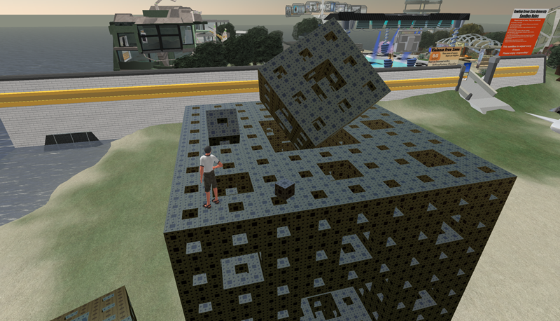
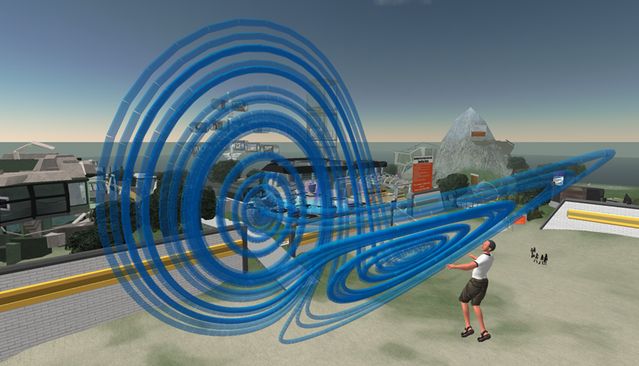
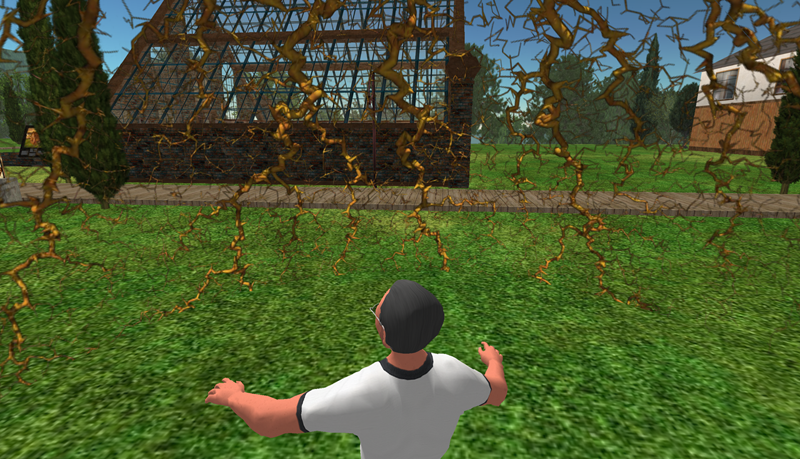
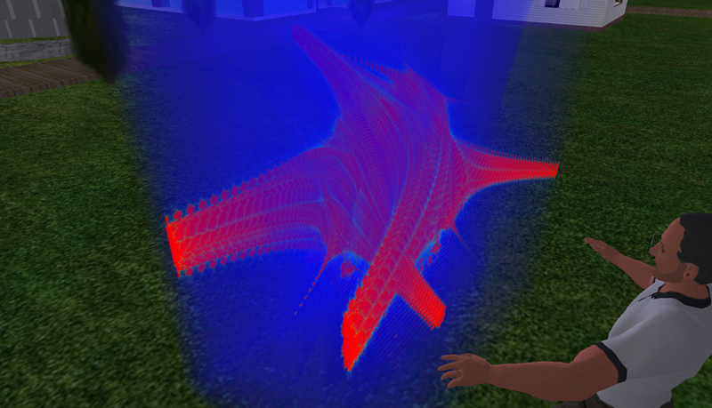
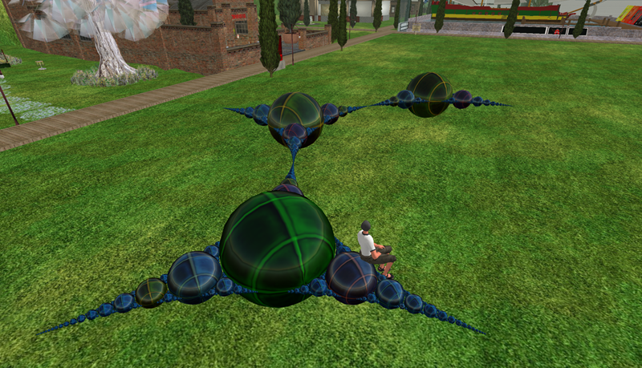

Evaluating Second Life for the Collaborative
Exploration of 3D Fractals.
P.D. Bourke
Computers & Graphics, Vol 33, Issue 1, Feb 2009, pp. 113-117.
Doi: 10.1016/j.cag.2008.08.004
Abstract
This paper explores the use of the online digital world Second Life as an environment in
which one can represent and explore three dimensional fractals, and in addition,
present them to others in a collaborative and engaging fashion. Second Life at its core
provides a means whereby multiple remote participants can engage with 3D geometry
within a virtual environment. It has been chosen as a likely candidate for this
exploration for a number of additional reasons, these include the easy to learn
user interface, its relatively widespread uptake compared to the alternatives, the
availability of the software for all the major operating systems, its non-aggressive
social networking foundation, and its scripting capability. The suitability of
Second Life will be evaluated through examples. These examples will attempt to
create representations of range of the different types of 3D fractals and a
discussion of the outcomes will be presented.
Keywords
Fractal geometry, game engine, multiplayer, immersion, Second Life.
PDF
cg2008.pdf
Figures

Figure 1. Menger sponge: 4 geometric iterations and additional iterations conveyed using
texture maps.

Figure 2. Lorenz attractor.

Figure 3. A 3D diffusion limited aggregation model represented as a spherical projection
onto a single sphere.

Figure 4. A planar slice through a 4D fractal resulting in a 3D volumetric dataset.

Figure 5. Apollony fractal generated by importing externally generated data.
|
{kind=link}
{kind=link}
{kind=link}
{kind=link}
{kind=link}